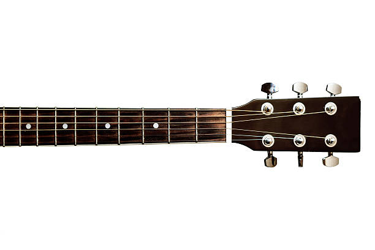
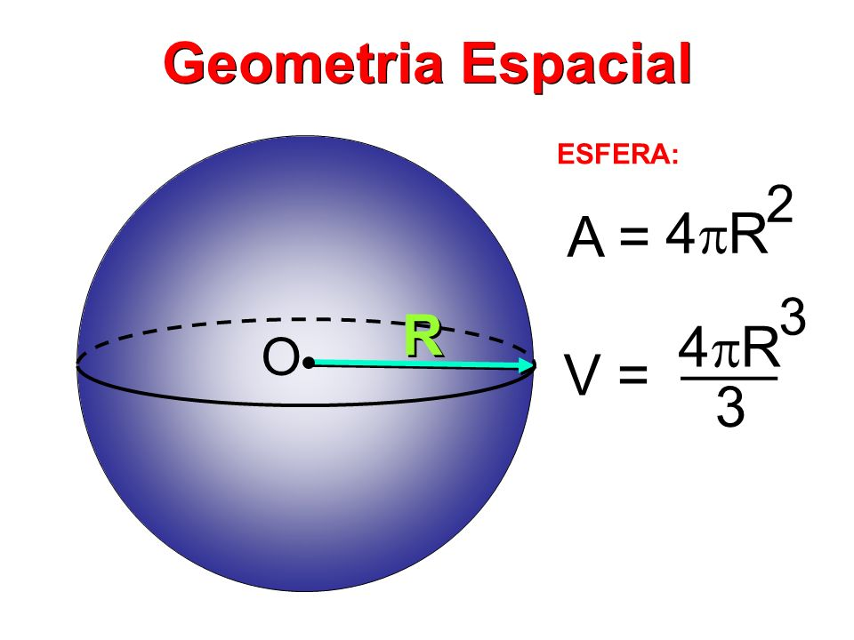

Bom, vocês todos devem estar se perguntando o que diabos estão vendo aqui, correto?
Deixe-me esclarecer
Você já pensou em algo que não pode ser definido, não tem partes ou forma e é adimensional (0 dimensões)? Este é o ponto: o elemento mais básico que forma toda a Geometria.
Agora que compreendemos um pouco sobre o funcionamento da estrutura de um PONTO, permita-me demonstrar o potencial de criação gráfico de um.
Vamos calcular uma função de 1º grau f(x) = x + 1; adote x = 0 e y = 0:
Vimos acima que o posicionamento de um ponto é capaz de criar uma reta. Sabemos que uma reta, em um plano espacial, é capaz de gerar muitos objetos, incluindo espadas, facas, ruas, paredes e afins. Mas o ponto é capaz de gerar somente uma reta?
A resposta é NÃO. O ponto, por ser um elemento sem dimensão, pode ser localizado em qualquer espaço dimensional, até mesmo dentro de si próprio.
Vamos analisar mais uma outra função:
Além de termos uma explição muito mais aprofundada para as funções, também é possível ver como um ponto ( . ) pode ser usado no dia a dia, e consequentemente, na formação do universo.
Um violão, ao ser utilizado, é marcado com a ponta dos nossos dedos, fazendo pressão no equipamento, em uma área que pode ser interpretada como um ponto (ponto de pressão | P = F / A). Toda o movimento acústico é gerado porque esses pontos pressionados são vibrados - o que significa que ao vibrar um ponto, temos uma frequência gerada.
Ao imaginar um SOL, ou qualquer outra estrela, vocês poderiam estar analisando se eles também formariam um ponto, o que nos leva a uma resposta: sim e não. Eles são elementos de dimensão 3D, o que nos gera, integralmente, raio, diâmetro, volume e altura.
Em um R (raio), temos uma linha reta, que como vimos acima, é formada pela ligação entre dois pontos ou mais, ou seja, nessa estrutura, temos a fixação de pontos gerando um elemento essencial para a vida: o sol.
Poderíamos falar também sobre como cada ponto poderia estar ligado na rotação do desenho do globo ou círculo. Se você pegar um ponto do desenho curvado e ligar até outra extremidade, irá gerar uma reta, que é formada por 2 pontos, o que significa que a estrutura dimensional só existe porque os pontos atômicos de cada elemento pode ligar-se um ao outro, dando base para mantér-se "em pé".